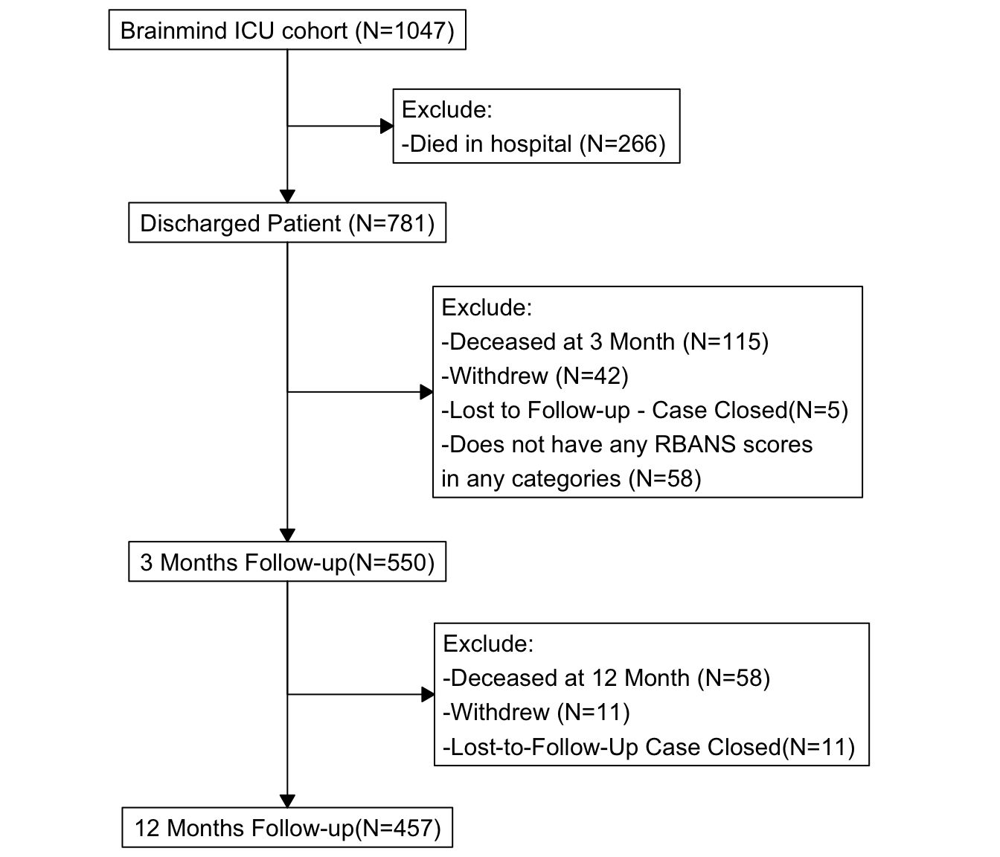
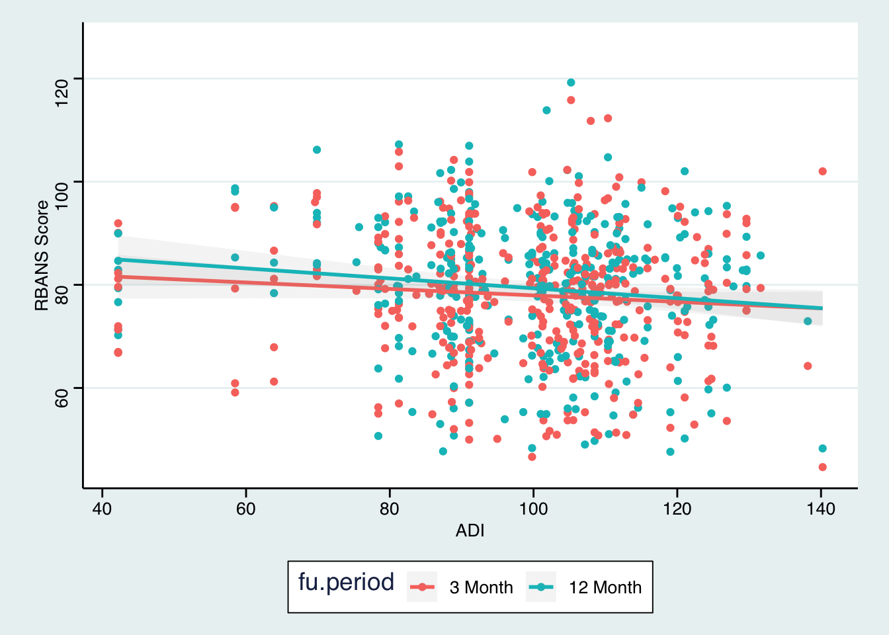
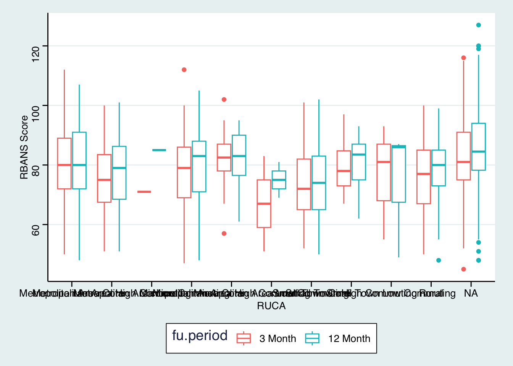
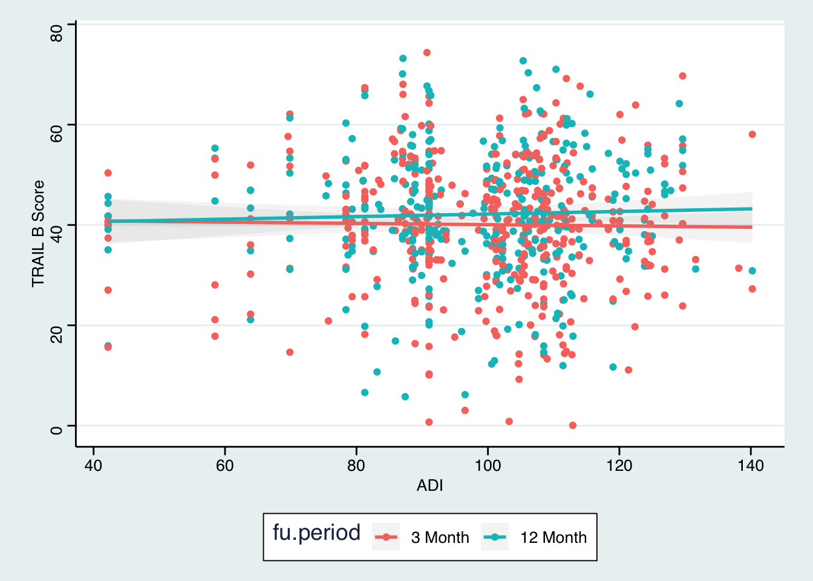
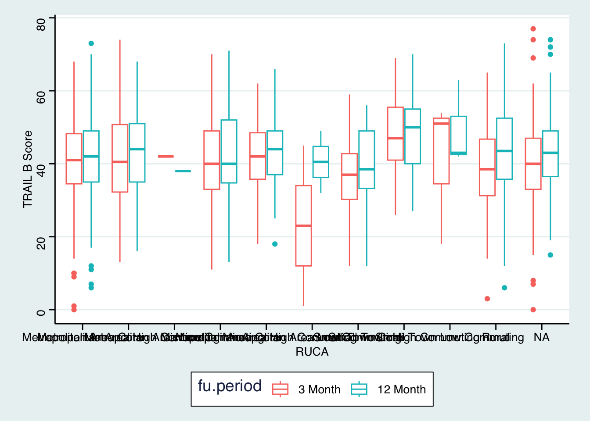
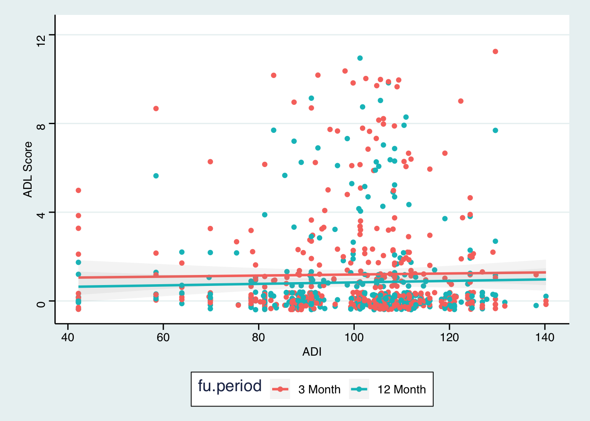
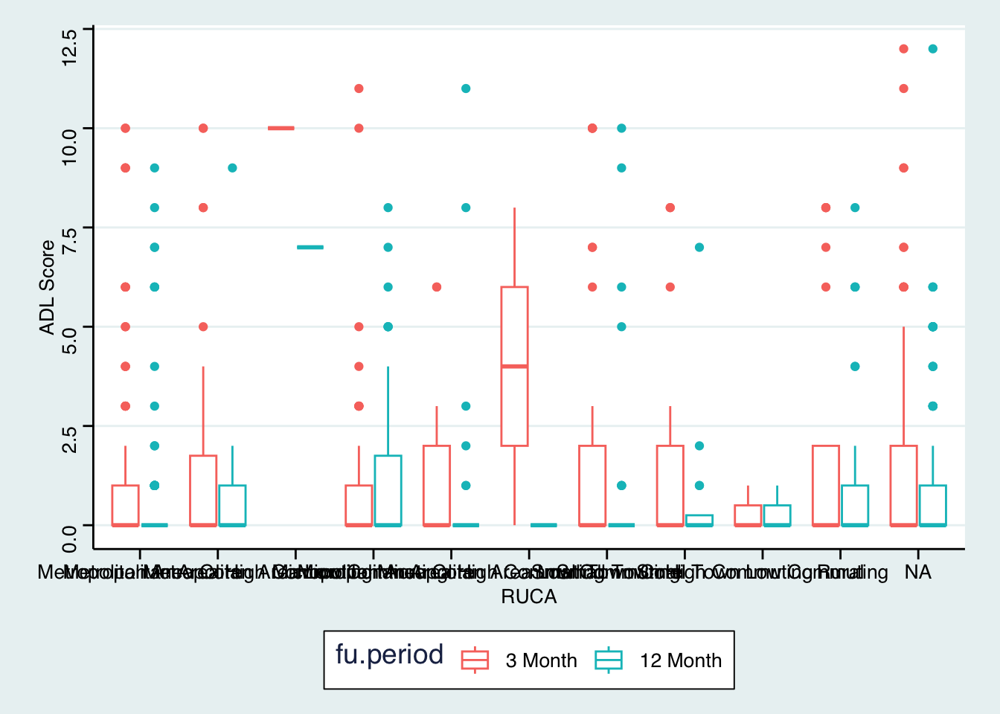

Report
Build Cohort
- Filter subjects that discharge from hospitals
- Filter subjects that has at least 1 observation in 3 month or 12 months
- Filter subjects that has at least 1 RBANS observation in any categories

| Overall (N=550) | |
|---|---|
| Age at enrollment | |
| meanIQR | 59.92 [51.37- 69.99] |
| Sex | |
| Male | 327 (59.5%) |
| Female | 223 (40.5%) |
| Years of education | |
| N-Miss | 4 |
| meanIQR | 12.64 [12.00- 14.00] |
| IQCODE score at enrollment (missing -> 3) | |
| meanIQR | 3.11 [3.00- 3.12] |
| FAQ category at enrollment | |
| N-Miss | 5 |
| No impairment | 502 (92.1%) |
| Functional impairment | 43 (7.9%) |
| Katz ADL category at enrollment | |
| N-Miss | 19 |
| Independent | 466 (87.8%) |
| Partial disability | 56 (10.5%) |
| Total dependence | 9 (1.7%) |
| Body Mass Index (BMI) | |
| N-Miss | 3 |
| meanIQR | 31.81 [24.96- 35.36] |
| Charlson score | |
| meanIQR | 2.40 [1.00- 4.00] |
| CSHA Frailty Index | |
| 1. Very fit | 21 (3.8%) |
| 2. Well | 90 (16.4%) |
| 3. Well with treated comorbid disease | 192 (34.9%) |
| 4. Apparently vulnerable | 120 (21.8%) |
| 5. Mildly frail | 68 (12.4%) |
| 6. Moderately frail | 48 (8.7%) |
| 7. Severely frail | 11 (2.0%) |
| FAQ score at enrollment | |
| N-Miss | 5 |
| meanIQR | 2.29 [0.00- 2.00] |
| Diagnosis at Enrollment | |
| Acute MI | 31 (5.6%) |
| Airway protection/UAO | 54 (9.8%) |
| CHF/cardiogenic shock | 52 (9.5%) |
| Neurological disease | 4 (0.7%) |
| Other | 137 (24.9%) |
| Sepsis, ARDS due to infection or septic shock | 169 (30.7%) |
| Surgery Procedure | 96 (17.5%) |
| Transplants (excluding liver) | 7 (1.3%) |
| APACHE II at ICU admission | |
| meanIQR | 23.13 [17.00- 29.00] |
| Modified SOFA (omits GCS) at enrollment | |
| meanIQR | 6.32 [4.00- 8.00] |
| Days severely septic in ICU during study period | |
| N-Miss | 4 |
| meanIQR | 3.91 [0.00- 5.00] |
| Length of time on vent during study period | |
| N-Miss | 67 |
| meanIQR | 5.72 [0.95- 5.95] |
| Days on MV while in hospital | |
| meanIQR | 5.46 [1.00- 6.00] |
| Days of Delirium | |
| meanIQR | 1.96 [0.00- 3.00] |
| Days of coma within study period (imputed) | |
| meanIQR | 1.99 [0.00- 2.00] |
| Days of delirium/coma within study period (imputed) | |
| meanIQR | 5.06 [1.00- 7.00] |
| Days of septic coma during study period | |
| meanIQR | 0.83 [0.00- 1.00] |
| ICU length of stay | |
| meanIQR | 8.26 [2.49- 9.96] |
| Hospital discharge location | |
| Facility | 195 (35.5%) |
| Home | 355 (64.5%) |
| Discharge from a Veteran Hospital | |
| Civilian | 441 (80.2%) |
| VA | 109 (19.8%) |
| Area Deprivation Index (ADI) | |
| N-Miss | 78 |
| meanIQR | 99.62 [89.91- 110.38] |
| Rural-Urban Commuting Areas (RUCA) Code | |
| N-Miss | 149 |
| Metropolitan Area Core | 150 (37.4%) |
| Metropolitan Area High Commuting | 47 (11.7%) |
| Metropolitan Area Low Commuting | 1 (0.2%) |
| Micropolitan Area Core | 69 (17.2%) |
| Micropolitan Area High Commuting | 32 (8.0%) |
| Micropolitan Area Low Commuting | 2 (0.5%) |
| Small Town Core | 41 (10.2%) |
| Small Town High Commuting | 21 (5.2%) |
| Small Town Low Commuting | 3 (0.7%) |
| Rural | 35 (8.7%) |
| 3 Month (N=550) | 12 Month (N=457) | p value | |
|---|---|---|---|
| RBANS global composite score | 0.084 | ||
| N-Miss | 86 | 60 | |
| meanIQR | 79.25 [71.00- 87.00] | 80.83 [72.00- 90.00] | |
| Trails B t-score | 0.004 | ||
| N-Miss | 70 | 55 | |
| meanIQR | 39.99 [33.00- 48.00] | 42.46 [35.00- 50.00] | |
| ADL dependence category | 0.020 | ||
| N-Miss | 27 | 8 | |
| No dependence (score = 0) | 330 (63.1%) | 315 (70.2%) | |
| Some dependence (score >=1) | 193 (36.9%) | 134 (29.8%) | |
| ADL total score | 0.010 | ||
| N-Miss | 27 | 8 | |
| meanIQR | 1.26 [0.00- 1.50] | 0.90 [0.00- 1.00] | |
| FAQ total score | 0.089 | ||
| N-Miss | 32 | 10 | |
| meanIQR | 5.69 [0.00- 9.00] | 4.98 [0.00- 8.00] | |
| FAQ impairment category | 0.243 | ||
| N-Miss | 32 | 10 | |
| No impairment (score 0-8) | 383 (73.9%) | 345 (77.2%) | |
| Some impairment (score >=9) | 135 (26.1%) | 102 (22.8%) | |
| SF-36 physical component score | < 0.001 | ||
| N-Miss | 35 | 18 | |
| meanIQR | 30.46 [22.07- 37.40] | 33.37 [24.41- 41.77] | |
| SF-36 mental component score | 0.613 | ||
| N-Miss | 35 | 18 | |
| meanIQR | 49.98 [39.72- 61.74] | 50.45 [41.74- 60.46] | |
| Status at followup | |||
| Deceased | 0 (0.0%) | 0 (0.0%) | |
| Living | 11 (2.0%) | 1 (0.2%) | |
| Living-Active in the study | 524 (95.3%) | 456 (99.8%) | |
| Living-Withdrew from the study | 0 (0.0%) | 0 (0.0%) | |
| Lost to Follow-Up - Case Closed | 0 (0.0%) | 0 (0.0%) | |
| Visit Not Completed | 13 (2.4%) | 0 (0.0%) | |
| Still Trying to Contact | 2 (0.4%) | 0 (0.0%) |
EDA






# A tibble: 2 × 2
n nn
<dbl> <int>
1 1 93
2 3 457Only 2 missing 3 month
Model
- Missing Data?(I dont mind imputing x, but imputing 3 months? thats depends)
- Interaction model or Longitudinal model